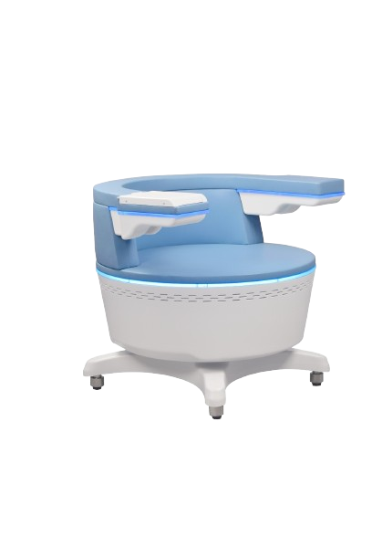

EMS kreslo
EMS (inkontinenčné elektromagnetické kreslo) kreslo využíva technológiu vysokovýkonného fokusovaného elektromagnetického poľa (HIFEM) na stimuláciu hlbokých svalov panvového dna a obnovenie neuromuskulárnej kontroly. Kľúčom k účinnosti je fokusácia elektromagnetickej energie, hĺbka prieniku a stimulácia celého panvového dna. Počas jedinej terapie dochádza k tisícom supramaximálnych kontrakcií svalov panvového dna, čo je extrémne dôležité pri reedukácii svalov u inkontinentných pacientov.
